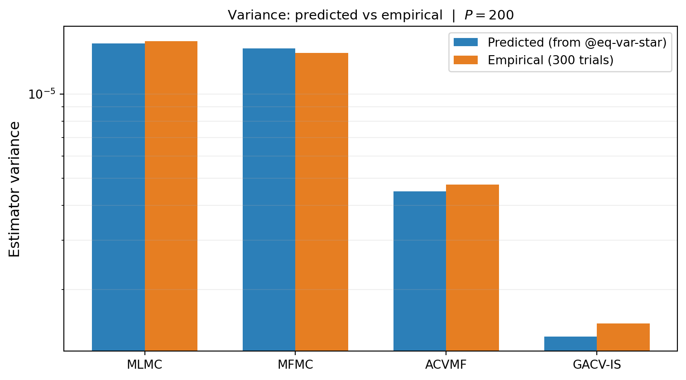

import numpy as np
import matplotlib.pyplot as plt
from pyapprox.util.backends.numpy import NumpyBkd
from pyapprox_benchmarks.statest import PolynomialEnsembleBenchmark
from pyapprox.statest import (
MLMCEstimator, MFMCEstimator, GMFEstimator,
)
from pyapprox.statest.acv import ACVAllocator, default_allocator_factory
from pyapprox.statest.acv.base import FittedACVEstimator
from pyapprox.statest.groupacv import GroupACVEstimatorIS
from pyapprox.statest.groupacv.allocation import GroupACVAllocationOptimizer
from pyapprox.statest.groupacv.base import FittedGroupACVEstimator
from pyapprox.statest.groupacv.utils import get_model_subsets
from pyapprox.statest.statistics import MultiOutputMean
from pyapprox.optimization.minimize.scipy.slsqp import ScipySLSQPOptimizer
from pyapprox.statest.groupacv.variable_space import AllocationProblemConfig
bkd = NumpyBkd()
benchmark = PolynomialEnsembleBenchmark(bkd, nmodels=5)
models = benchmark.problem().models()
costs = benchmark.problem().costs()
variable = benchmark.problem().prior()
nqoi = models[0].nqoi()
nmodels = len(models)
M = nmodels - 1
cov = benchmark.ensemble_covariance()
stat = MultiOutputMean(nqoi, bkd)
stat.set_pilot_quantities(cov)
ri_zeros = bkd.zeros(M, dtype=int)
optimizer = ScipySLSQPOptimizer(maxiter=1000, ftol=1e-10)
log_ineq_config = AllocationProblemConfig(
variable_scaling="log",
budget_constraint_form="inequality",
)
target_cost = 200.0
n_trials = 300
def rvs_int(n):
return variable.rvs(int(n))
def build_and_run(label, fitted):
pred_var = float(bkd.to_numpy(fitted.covariance())[0, 0])
empirical = np.empty(n_trials)
for t in range(n_trials):
np.random.seed(t)
samples = fitted.generate_samples_per_model(rvs_int)
values = [models[a](samples[a]) for a in range(nmodels)]
empirical[t] = float(fitted(values))
return label, pred_var, empirical.var(ddof=1)
# Allocate each estimator: template → allocator → fitted
mlmc_t = MLMCEstimator(stat, costs)
mlmc_e = FittedACVEstimator(
mlmc_t, default_allocator_factory(mlmc_t).allocate(target_cost))
mfmc_t = MFMCEstimator(stat, costs)
mfmc_e = FittedACVEstimator(
mfmc_t, default_allocator_factory(mfmc_t).allocate(target_cost))
acvmf_t = GMFEstimator(stat, costs, recursion_index=ri_zeros)
acvmf_e = FittedACVEstimator(
acvmf_t, ACVAllocator(acvmf_t, optimizer=optimizer).allocate(target_cost))
gacv_t = GroupACVEstimatorIS(
stat, costs, model_subsets=get_model_subsets(nmodels, bkd))
gacv_e = FittedGroupACVEstimator(
gacv_t, GroupACVAllocationOptimizer(
gacv_t, optimizer=optimizer, problem_config=log_ineq_config,
).optimize(target_cost))
results = [
build_and_run("MLMC", mlmc_e),
build_and_run("MFMC", mfmc_e),
build_and_run("ACVMF", acvmf_e),
build_and_run("GACV-IS", gacv_e),
]Group ACV: Analysis
PyApprox Tutorial Library
Deriving the optimal weight formula for group ACV via Lagrangian, showing that MLMC, MFMC, ACVMF, and MLBLUE specialize to the same result, and verifying the predicted variance numerically.
TipDownload Notebook
Learning Objectives
After completing this tutorial, you will be able to:
- Derive the optimal group ACV weight vector \(\boldsymbol{\beta}^\star\) and the resulting minimum variance from a constrained quadratic program
- Show that the MLBLUE GLS solution from MLBLUE Analysis is the independent-samples specialization of the group ACV formula
- Specialise the group ACV formula to recover the ACVMF Schur complement, the MFMC nested-sample weights, and the MLMC fixed-weights estimator
- Verify the predicted variance numerically across all four specializations on a common benchmark
- Explain why adding a group to the collection can only reduce variance, and identify the corner case where it does not
Prerequisites
Complete Group ACV Concept before this tutorial. Familiarity with General ACV Analysis and MLBLUE Analysis is useful: this tutorial connects their results to a common derivation.
Setup and Notation
We have \(M+1\) models \(f_0, \ldots, f_M\) with population mean vector \(\boldsymbol{\mu} = [\mu_0, \ldots, \mu_M]^\top \in \mathbb{R}^{M+1}\) and population covariance \(\boldsymbol{\Sigma} \in \mathbb{R}^{(M+1)\times(M+1)}\).
An estimator is specified by a collection of groups \(\{\mathcal{G}^k\}_{k=1}^K\), where \(\mathcal{G}^k = (\mathcal{S}^k, m^k)\) with \(\mathcal{S}^k \subseteq \{0, \ldots, M\}\) non-empty and \(m^k \geq 0\) an integer sample count. Order the elements of each \(\mathcal{S}^k\) ascending and write \(\mathcal{S}^k = \{j_1^k, \ldots, j_{|\mathcal{S}^k|}^k\}\).
For each group \(k\), draw \(m^k\) independent samples \(\{\boldsymbol{\theta}_k^{(i)}\}_{i=1}^{m^k}\) from the prior. Define the per-group sample-mean vector \[ \hat{\mathbf{Q}}^k = (\hat{\mu}_{j_1^k}^k, \ldots, \hat{\mu}_{j_{|\mathcal{S}^k|}^k}^k)^\top \in \mathbb{R}^{|\mathcal{S}^k|}, \qquad \hat{\mu}_\ell^k = \frac{1}{m^k}\sum_{i=1}^{m^k} f_\ell(\boldsymbol{\theta}_k^{(i)}). \] Each entry is unbiased: \(\mathbb{E}[\hat{\mu}_\ell^k] = \mu_\ell\).
The group ACV estimator combines all per-group estimators with weight vectors \(\boldsymbol{\beta}^k \in \mathbb{R}^{|\mathcal{S}^k|}\): \[ \hat{Q}_{\text{GACV}} = \sum_{k=1}^K (\boldsymbol{\beta}^k)^{\!\top} \hat{\mathbf{Q}}^k. \tag{1}\]
Unbiasedness as a Linear Constraint
Taking expectations in Equation 1 and regrouping by model index, \[ \mathbb{E}[\hat{Q}_{\text{GACV}}] = \sum_{k=1}^K (\boldsymbol{\beta}^k)^{\!\top} \boldsymbol{\mu}^k = \sum_{\ell=0}^M s_\ell \mu_\ell, \quad s_\ell := \sum_{k:\, \ell \in \mathcal{S}^k} \beta^k_\ell. \] For \(\hat{Q}_{\text{GACV}}\) to be unbiased for \(\mu_0\) regardless of the unknown \(\boldsymbol{\mu}\), the coefficient on each \(\mu_\ell\) must match a target value \(s_\ell^\star\): here \(s_0^\star = 1\) and \(s_\ell^\star = 0\) for \(\ell \geq 1\).
Stack all per-group weights into a single long vector \(\boldsymbol{\beta} \in \mathbb{R}^P\) with \(P = \sum_k |\mathcal{S}^k|\). Define the restriction matrix \(R \in \mathbb{R}^{(M+1) \times P}\) such that \((R \boldsymbol{\beta})_\ell = s_\ell\). Concretely, the column of \(R\) corresponding to \(\beta^k_\ell\) is the standard basis vector \(\mathbf{e}_\ell \in \mathbb{R}^{M+1}\).
Unbiasedness is then the linear constraint \[ R\, \boldsymbol{\beta} = \mathbf{e}^0, \qquad \mathbf{e}^0 = (1, 0, \ldots, 0)^\top \in \mathbb{R}^{M+1}. \tag{2}\]
The Variance of the Combined Estimator
Stack the per-group estimator vectors into the long vector \(\hat{\mathbf{Q}} = ((\hat{\mathbf{Q}}^1)^\top, \ldots, (\hat{\mathbf{Q}}^K)^\top)^\top \in \mathbb{R}^P\). Then \[ \hat{Q}_{\text{GACV}} = \boldsymbol{\beta}^{\!\top} \hat{\mathbf{Q}}, \qquad \mathbb{V}\!\left[\hat{Q}_{\text{GACV}}\right] = \boldsymbol{\beta}^{\!\top} C\, \boldsymbol{\beta}, \] where \(C = \mathrm{Cov}(\hat{\mathbf{Q}}, \hat{\mathbf{Q}}) \in \mathbb{R}^{P \times P}\) is the full per-group estimator covariance.
The structure of \(C\) depends on how samples are drawn across groups:
Independent samples (IS). Different groups draw independent samples. Then \(\mathrm{Cov}(\hat{\mathbf{Q}}^k, \hat{\mathbf{Q}}^{k'}) = 0\) for \(k \neq k'\), so \(C\) is block-diagonal with \[ C^k = \frac{1}{m^k}\,\boldsymbol{\Sigma}^k, \qquad \boldsymbol{\Sigma}^k = (\boldsymbol{\Sigma})_{\mathcal{S}^k \times \mathcal{S}^k}. \tag{3}\]
Nested samples. Groups share samples (e.g., the MFMC nested structure \(\mathcal{Z}_0 \subset \mathcal{Z}_1 \subset \cdots\)). The off-diagonal blocks \(\mathrm{Cov}(\hat{\mathbf{Q}}^k, \hat{\mathbf{Q}}^{k'})\) are nonzero. Their values are determined by the intersection sizes \(|\mathcal{Z}^k \cap \mathcal{Z}^{k'}|\) and the population covariance \(\boldsymbol{\Sigma}\) (see General ACV Analysis §Appendix A).
In both cases \(C\) is symmetric positive definite (assuming \(\boldsymbol{\Sigma}\) is positive definite and all \(m^k > 0\)). The optimal-weight derivation below uses only this property of \(C\).
The Optimal-Weight Theorem
We solve the constrained quadratic program \[ \min_{\boldsymbol{\beta} \in \mathbb{R}^P} \boldsymbol{\beta}^{\!\top} C\, \boldsymbol{\beta} \quad \text{subject to} \quad R\, \boldsymbol{\beta} = \mathbf{e}^0. \tag{4}\]
Derivation via Lagrangian
Form the Lagrangian with multipliers \(\boldsymbol{\lambda} \in \mathbb{R}^{M+1}\): \[ \mathcal{L}(\boldsymbol{\beta}, \boldsymbol{\lambda}) = \boldsymbol{\beta}^{\!\top} C\, \boldsymbol{\beta} - 2 \boldsymbol{\lambda}^{\!\top} (R\,\boldsymbol{\beta} - \mathbf{e}^0). \] First-order optimality conditions: \[ \nabla_{\boldsymbol{\beta}} \mathcal{L} = 2 C\,\boldsymbol{\beta} - 2 R^{\!\top}\boldsymbol{\lambda} = 0 \;\Longrightarrow\; \boldsymbol{\beta} = C^{-1} R^{\!\top} \boldsymbol{\lambda}, \] \[ \nabla_{\boldsymbol{\lambda}} \mathcal{L} = -2(R\,\boldsymbol{\beta} - \mathbf{e}^0) = 0 \;\Longrightarrow\; R\,\boldsymbol{\beta} = \mathbf{e}^0. \] Substituting the first into the second: \[ R\, C^{-1} R^{\!\top} \boldsymbol{\lambda} = \mathbf{e}^0 \;\Longrightarrow\; \boldsymbol{\lambda} = (R\, C^{-1} R^{\!\top})^{-1} \mathbf{e}^0. \] Back-substituting: \[ \boxed{ \boldsymbol{\beta}^{\star} = C^{-1} R^{\!\top} \left(R\, C^{-1} R^{\!\top}\right)^{-1} \mathbf{e}^0 } \tag{5}\]
Minimum variance
Substituting Equation 5 into the objective: \[ \mathbb{V}\!\left[\hat{Q}_{\text{GACV}}\right]_{\boldsymbol{\beta} = \boldsymbol{\beta}^\star} = (\boldsymbol{\beta}^\star)^{\!\top} C\, \boldsymbol{\beta}^\star = (\mathbf{e}^0)^{\!\top} (R\, C^{-1} R^{\!\top})^{-1} R\, C^{-1} \cdot C \cdot C^{-1} R^{\!\top} (R\, C^{-1} R^{\!\top})^{-1} \mathbf{e}^0. \] Two factors of \((R\, C^{-1} R^{\!\top})^{-1} R\, C^{-1} R^{\!\top}\) cancel inside, leaving \[ \boxed{ \mathbb{V}\!\left[\hat{Q}_{\text{GACV}}\right]_{\boldsymbol{\beta} = \boldsymbol{\beta}^\star} = (\mathbf{e}^0)^{\!\top} \left(R\, C^{-1} R^{\!\top}\right)^{-1} \mathbf{e}^0. } \tag{6}\]
The matrix \(\boldsymbol{\Psi} := R\, C^{-1} R^{\!\top} \in \mathbb{R}^{(M+1) \times (M+1)}\) is the information matrix for the joint estimator of \(\boldsymbol{\mu}\). The minimum variance is the \((0, 0)\) entry of \(\boldsymbol{\Psi}^{-1}\).
This is the central result of group ACV. It applies to any group collection, with \(C\) computed from the collection’s sample-set structure.
Specialization 1: MLBLUE as Group ACV with IS
The independent-samples case gives the block-diagonal \(C\) in Equation 3. Substituting: \[ \boldsymbol{\Psi} = R\, C^{-1} R^{\!\top} = \sum_{k=1}^K R^k\, (C^k)^{-1}\, (R^k)^{\!\top} = \sum_{k=1}^K m^k\, R^k (\boldsymbol{\Sigma}^k)^{-1} (R^k)^{\!\top}, \] where \(R^k\) is the columns of \(R\) corresponding to group \(k\), and we used \((C^k)^{-1} = m^k (\boldsymbol{\Sigma}^k)^{-1}\).
This is exactly the MLBLUE information matrix from MLBLUE Analysis: \[ \boldsymbol{\Psi}^{\mathrm{BLUE}} = \sum_{k=1}^K m^k\, \mathbf{R}_k^{\!\top} (\mathbf{C}_k^{\mathrm{moment}})^{-1} \mathbf{R}_k, \] under the identification \(R^k = \mathbf{R}_k^{\!\top}\) (the group ACV \(R\) has columns where the MLBLUE \(\mathbf{H}\) has rows, since group ACV writes the constraint left-to-right and MLBLUE writes the observation model right-to-left). The minimum variance Equation 6 applied to a target vector \(\boldsymbol{\beta}_{\text{target}} = \mathbf{e}^0\) matches the MLBLUE variance \(\boldsymbol{\beta}_{\text{target}}^{\!\top} \boldsymbol{\Psi}^{-1} \boldsymbol{\beta}_{\text{target}}\) from Eq. (mlblue-analysis-var).
Conclusion. MLBLUE is group ACV with independent samples, any collection of non-empty subsets, and target vector \(\mathbf{e}^0\).
Specialization 2: ACVMF as Group ACV with Anchor-Star Groups
ACVMF uses groups \(\mathcal{S}^k = \{f_0, f_\alpha\}\) for \(\alpha = 1, \ldots, M\), plus the singleton \(\mathcal{S}^0 = \{f_0\}\). All “star” groups share the same anchor partition \(\mathcal{P}_0\) (which lives in \(\mathcal{Z}_0\)). The sample-set structure is therefore not independent across groups — \(\mathcal{P}_0\) appears in every star group.
Working through the covariance contributions:
- For each pair of star groups \(\{0, \alpha\}\) and \(\{0, \beta\}\) with \(\alpha \neq \beta\), the shared partition \(\mathcal{P}_0\) contributes a non-zero off-diagonal block to \(C\).
- The full structure recovers the General ACV Analysis formulas for \(\Sigma_{\Delta\Delta}\) and \(\Sigma_{\Delta Q_0}\).
After algebraic simplification, Equation 6 specializes to the Schur complement \[ \mathbb{V}[\hat{Q}_{\text{ACVMF}}] = \Sigma_{Q_0 Q_0} - \boldsymbol{\sigma}_{Q_0 \Delta}^{\!\top} \Sigma_{\Delta\Delta}^{-1} \boldsymbol{\sigma}_{Q_0 \Delta}, \] which is the result of General ACV Analysis Theorem. Working through the algebra carefully is mechanical but lengthy; the key point is that no new optimization principle is needed — only the change of variables from group weights to ACV \(\eta\)-weights.
Specialization 3: MFMC as Group ACV with Nested Groups
MFMC uses nested groups \(\mathcal{S}^k = \{0, 1, \ldots, k-1\}\) for \(k = 1, \ldots, M+1\), with nested sample sets \(\mathcal{Z}_0 \subset \mathcal{Z}_1 \subset \cdots \subset \mathcal{Z}_M\). The covariance \(C\) has full off-diagonal structure determined by the nesting.
Substituting into Equation 5 and rewriting in terms of MFMC’s \(\eta\)-weights, the optimal weights are \[ \eta_\alpha^\star = -\frac{\rho_{0,\alpha} \sigma_0}{\sigma_\alpha} \cdot \frac{r_\alpha - r_{\alpha-1}}{r_\alpha} \cdot \frac{1}{1 - \rho_{0,\alpha-1}^2} \cdot (\text{ratio terms}), \] matching the MFMC Analysis closed-form derivation. The General ACV Analysis appendix carries the full substitution.
Specialization 4: MLMC as Group ACV with Fixed Weights
MLMC uses pairwise groups \(\mathcal{S}^k = \{k-1, k\}\) for \(k = 1, \ldots, M\), plus \(\mathcal{S}^0 = \{0\}\). Sample sets are independent across groups (no nesting, no sharing).
The MLMC estimator differs from group ACV in one important way: it fixes \(\boldsymbol{\beta}^k = (1, -1)\) for \(k \geq 1\) rather than choosing \(\boldsymbol{\beta}^k\) via Equation 5. The fixed weights are consistent with the telescoping identity that MLMC uses to construct its estimator, but they do not generally minimize variance.
Specifically, the optimal weight on \(f_{k-1}\) in group \(k\) is \[ \beta_{k-1}^{k,\star} = \frac{\sigma_k^2}{\sigma_{k-1}^2 + \sigma_k^2 - 2 \rho_{k-1,k}\sigma_{k-1}\sigma_k}, \] which equals 1 only when \(\rho_{k-1,k} = 1\) (perfect correlation) and the level variances are equal — neither of which holds exactly in practice. MLMC is therefore group ACV evaluated at a suboptimal fixed point. The penalty is small when consecutive levels are highly similar (which is the design goal of mesh refinement hierarchies), and zero in the perfect-correlation limit.
The general ACV / GACV optimization can rediscover MLMC by choosing its group structure but optimizing the weights rather than fixing them — the resulting estimator is sometimes called the “weighted MLMC” or “generalized MLMC” and dominates the fixed-weight MLMC at every group structure.
Numerical Verification
We verify Equation 6 empirically by running each of MLMC, MFMC, ACVMF, and GACV-IS (MLBLUE-equivalent) at a fixed total budget on the five-model polynomial benchmark, then computing the empirical variance over many independent realisations.
fig, ax = plt.subplots(figsize=(8, 4.5))
labels = [r[0] for r in results]
pred = [r[1] for r in results]
emp = [r[2] for r in results]
x = np.arange(len(results))
width = 0.35
ax.bar(x - width/2, pred, width, color="#2C7FB8",
label="Predicted (from @eq-var-star)")
ax.bar(x + width/2, emp, width, color="#E67E22",
label=f"Empirical ({n_trials} trials)")
ax.set_xticks(x)
ax.set_xticklabels(labels)
ax.set_ylabel("Estimator variance", fontsize=12)
ax.set_yscale("log")
ax.set_title(f"Variance: predicted vs empirical | $P = {int(target_cost)}$",
fontsize=11)
ax.legend(fontsize=10)
ax.grid(True, alpha=0.2, axis="y", which="both")
plt.tight_layout()
plt.show()
The empirical bars match the predicted bars to within Monte Carlo error, confirming that Equation 6 is the correct variance formula for every specialization — not just for MLBLUE or ACVMF in isolation, but for all four group structures using the same underlying derivation.
Adding a Group Cannot Increase Variance
A useful structural property of the group ACV framework: extending the group collection (adding a new group \(\mathcal{G}^{K+1}\) with \(m^{K+1} > 0\)) can only reduce the optimal variance.
The argument is straightforward. Suppose the optimal weights for the original collection are \(\boldsymbol{\beta}^\star\). For the extended collection, consider the weight vector that uses \(\boldsymbol{\beta}^\star\) on the original groups and \(\boldsymbol{\beta}^{K+1} = \mathbf{0}\) on the new group. This is feasible (the new constraint terms vanish), achieves the original variance, and is generally not optimal in the extended problem. The optimal extended-collection weights must therefore achieve at most the original variance.
Equality holds only when the new group’s contribution to \(C\) and \(R\) provides no linearly independent information — e.g., when \(\mathcal{G}^{K+1}\) duplicates an existing group or contains only models that are linear combinations of models in existing groups.
Practical implication. When in doubt about whether to include a group, include it. The framework’s allocator may give it zero samples if it is unhelpful, but it cannot make things worse.
The complementary property — adding a model (not a group) — does not have this guarantee. A weakly correlated new model absorbs budget from useful models, and the total variance can increase. This is the Ensemble Selection problem.
Connection to the Sample Allocation Problem
The variance Equation 6 is a function of the sample counts \(\{m^k\}\). Optimizing those counts subject to a budget constraint \(\sum_k m^k \left(\sum_{\ell \in \mathcal{S}^k} C_\ell\right) \leq P\) gives the sample allocation problem: \[ \min_{\{m^k\}}\;\; (\mathbf{e}^0)^{\!\top} \left(\sum_k m^k\, R^k (\boldsymbol{\Sigma}^k)^{-1} (R^k)^{\!\top}\right)^{-1} \mathbf{e}^0 \quad\text{s.t.}\quad \sum_k m^k c^k \leq P,\; m^k \geq 0, \] where \(c^k = \sum_{\ell \in \mathcal{S}^k} C_\ell\) is the per-sample cost of group \(k\).
For the IS case, the objective is convex in \(\{m^k\}\) because the inverse of a linear combination of positive semidefinite matrices is operator-convex, and the Schur complement form allows the problem to be cast as a semidefinite program (see MLBLUE Analysis). For nested-sample cases (MFMC and ACVMF), the objective is not convex in \(\{m^k\}\) and is solved by gradient-based non-convex methods (ACVAllocator in PyApprox).
ImportantSDP works only for the mean-only IS case
The SDP formulation requires both (i) independent samples, so \(C\) is block-diagonal with \(C^k = (1/m^k) \boldsymbol{\Sigma}^k\), and (ii) the mean as the target statistic, so \(\boldsymbol{\Sigma}^k\) is the model output covariance. For variance or mean+variance estimation, \(C^k\) is not of the form \((1/m^k)\,\)(matrix), and the linear-in-\(\boldsymbol{m}\) structure required by the SDP does not hold. This is why MLBLUEEstimator rejects variance stats and the SDP allocator is mean-only. For variance estimation under group ACV, use GroupACVEstimatorIS or GroupACVEstimatorNested with the gradient-based optimizer.
Connection to the Paper
The notation here matches [GJE2024] with the following identifications:
| This tutorial | [GJE2024] paper | Object |
|---|---|---|
| \(\mathcal{G}^k = (\mathcal{S}^k, m^k)\) | group, Definition 4 | Group |
| \(\boldsymbol{\beta}^k\) | \(\tilde{\boldsymbol{\beta}}^k\) | Per-group weight |
| \(R\) | restriction matrix | Constraint matrix |
| \(\mathbf{e}^0\) | target vector | RHS of unbiasedness |
| \(C\) | \(C\) | Full per-group estimator covariance |
| Equation 5 | Theorem 6 | Optimal weights |
| Equation 6 | Theorem 6 | Minimum variance |
| MLBLUE specialization | Corollary 8 | Recovers Schaden-Ullmann ML-BLUE |
| MFMC specialization | Section 4 | Recovers Peherstorfer et al. MFMC |
The paper’s Algorithm 1 (SAOB-to-nested conversion) shows the equivalence between nested-samples GACV and MLBLUE-IS with cumulative sums of partition sizes — strengthening the unification beyond the formal one developed here.
Key Takeaways
- The optimal group ACV weights Equation 5 and the resulting variance Equation 6 follow from a single Lagrangian on a constrained quadratic
- The information matrix \(\boldsymbol{\Psi} = R\, C^{-1} R^{\!\top}\) is the central object; the minimum variance is the \((0,0)\) entry of \(\boldsymbol{\Psi}^{-1}\)
- MLBLUE is the IS specialization; ACVMF and MFMC are nested-sample specializations; MLMC is a fixed-weight (suboptimal) special case
- Figure 1 confirms the formula holds across all four specializations on a common benchmark
- Adding a group cannot increase the optimal variance; adding a model can
Exercises
Verify the Lagrangian derivation in Section 6 by carrying out the substitution of \(\boldsymbol{\beta} = C^{-1} R^{\!\top} \boldsymbol{\lambda}\) into the constraint and re-deriving \(\boldsymbol{\lambda}^\star\).
For a two-model ensemble with a single group \(\mathcal{S}^1 = \{0, 1\}\) and \(m^1 = N\) samples, write out \(R\), \(C\), and \(\boldsymbol{\Psi}\) explicitly. Show that Equation 6 reduces to the classical control variate variance \(\sigma_0^2(1 - \rho^2)/N\).
For a three-model independent-sample case with groups \(\{\{f_0\}, \{f_0, f_1\}, \{f_0, f_2\}\}\), compute \(\boldsymbol{\Psi}\) explicitly and identify which entries depend on \(\rho_{0,1}\) versus \(\rho_{0,2}\) versus \(\rho_{1,2}\).
Suboptimality of MLMC. Take the two-level MLMC estimator with groups \(\mathcal{S}^1 = \{0\}, \mathcal{S}^2 = \{0, 1\}\) and fixed weights \(\boldsymbol{\beta}^2 = (1, -1)\). Compute the variance under this fixed-weight choice and under Equation 5. Show that the two variances agree only when \(\rho_{0,1} \sigma_0 = \sigma_1\) — a non-generic condition.
(Challenge) Adding a group cannot increase variance, but it can leave it unchanged. Construct a three-model example with two groups where adding a third group does not improve the optimal variance. (Hint: think about linear dependence among the rows of \(R\) for the augmented collection.)
Next Steps
- Multi-Output ACV Analysis — Vector-valued extensions of Equation 5
- Group ACV Multi-Statistic Concept — How \(C^k\) generalizes for variance and mean+variance estimation
- Group ACV Mixed Concept — How dropping rows of \(R\) implements mixed known statistics
References
[GJE2024] A. Gorodetsky, J. Jakeman, M. Eldred. Grouped approximate control variate estimators. arXiv:2402.14736, 2024. DOI
[GGEJJCP2020] A. Gorodetsky, S. Geraci, M. Eldred, J. Jakeman. A generalized approximate control variate framework for multifidelity uncertainty quantification. Journal of Computational Physics, 408:109257, 2020. DOI
[SUSIAMUQ2020] D. Schaden, E. Ullmann. On multilevel best linear unbiased estimators. SIAM/ASA J. Uncertainty Quantification 8(2):601–635, 2020. DOI
[PWGSIAM2016] B. Peherstorfer, K. Willcox, M. Gunzburger. Optimal Model Management for Multifidelity Monte Carlo Estimation. SIAM J. Sci. Comput. 38(5):A3163–A3194, 2016. DOI